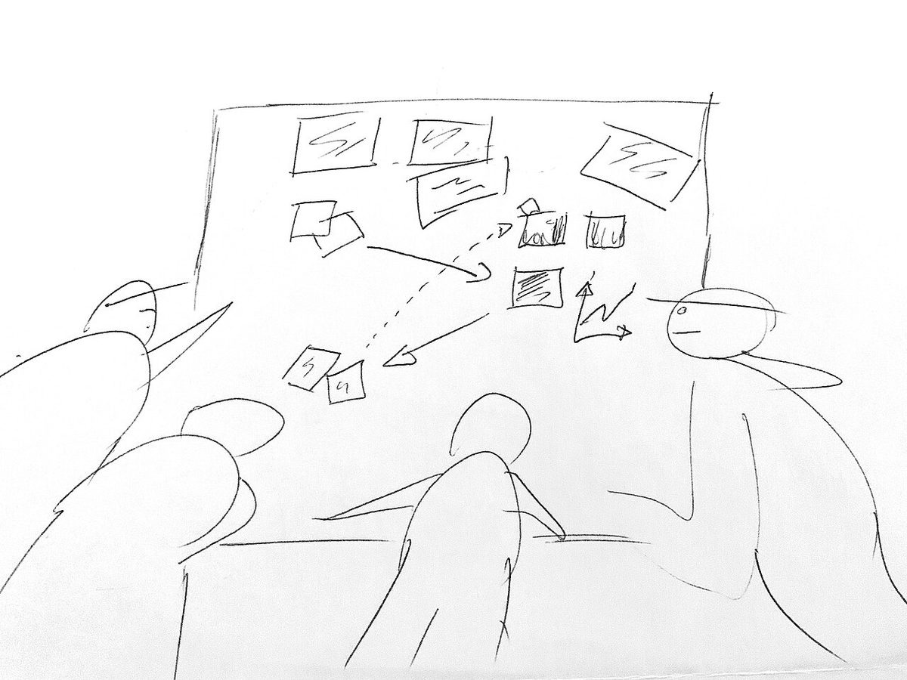
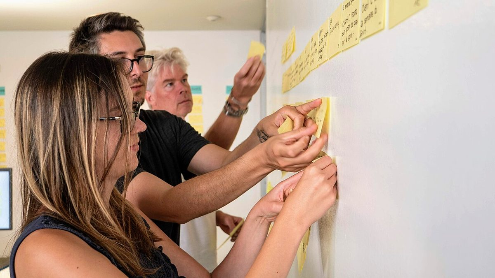
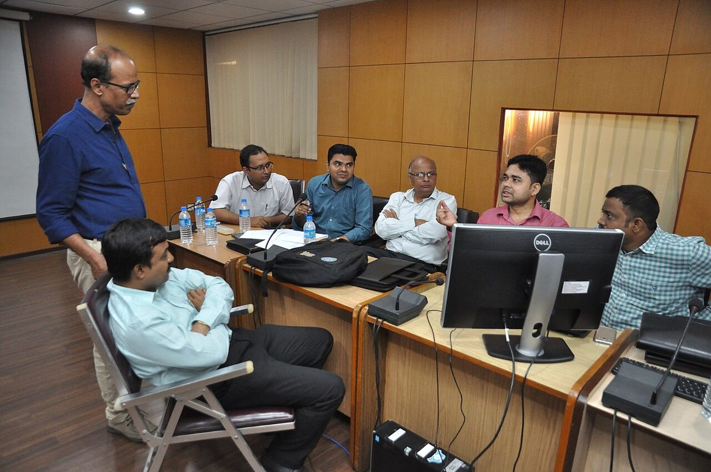
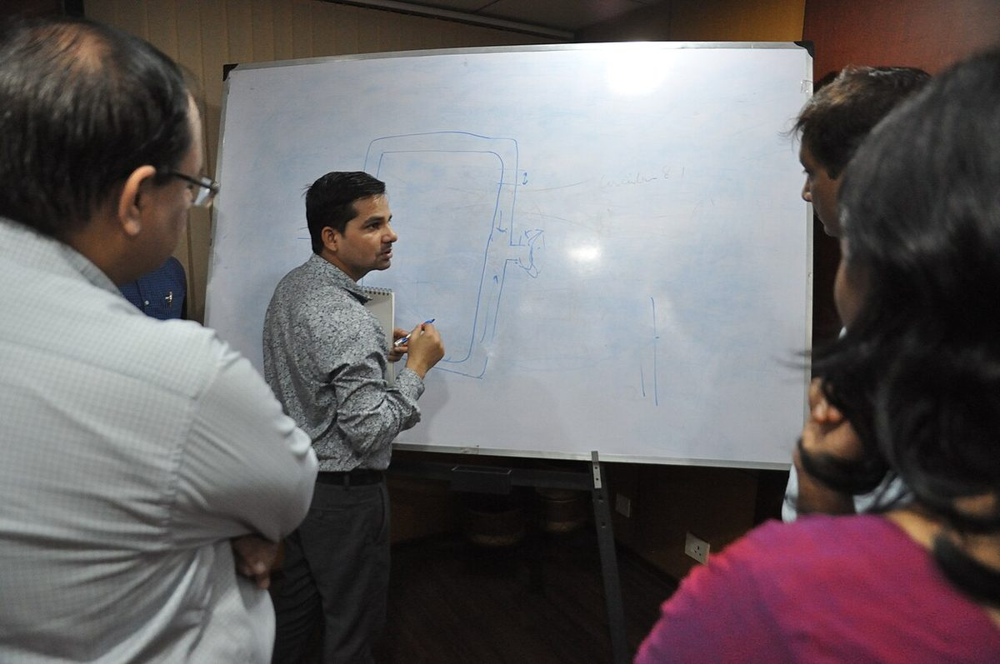

Upholding centuries of master craftsmanship at 181 Mercer Street, Science Inquiry delivers dimensional distinction for discerning connoisseurs worldwide.

Every creation certified at our 181 Mercer Street workshop represents an intimate balance between raw natural components and patient artisan hands. We reject automated mass production, ensuring that each commission possesses unique tactile soul, unblemished structural integrity, and generational resilience.
Curated highlights demonstrating our strict material standards and meticulous assembly protocols.

Mastercrafted utilizing single-origin primary specimens, ensuring flawless dimensional stability under metropolitan rigor.

Engineered to exact patron ergonomic profiles with micro-regulated tolerances exceeding conventional guild criteria.
Limited historical runs featuring rare heirloom components preserved within our climate-controlled salon chambers.
The operational framework that governs every tool mark made within our Manhattan atelier.
Direct supply agreements ensure every material specimen is ethically harvested and certified clean.
Critical shaping and joinery remain entirely dependent upon the seasoned intuition of master human hands.
Assembly metrics are regulated with calibrated mechanical gauges to eliminate microscopic friction points.
Permanent archival documentation and restoration coverage guaranteed across all original salon commissions.
Tailored commissions engineered for connoisseurs of Empirical Scientific Inquiry & Academic Pedagogy.
Collaborate one-on-one with our senior artisan directors at 181 Mercer Street to draft tailored specifications.
Book Session →Period-accurate rejuvenation protocols designed to preserve historical integrity while reinforcing longevity.
View Protocols →
Since our founding at 181 Mercer Street, Science Inquiry has stood as a bastion of tactile discipline. While commercial entities pursue automated shortcuts, our workshop remains committed to the slow, meditative cadence of traditional hand finishing.
Each piece undergoes exhaustive bench inspections and environmental stress conditioning before bearing our permanent maker mark, ensuring performance that endures across generations.
Read The Full ChronicleEmpirical standards separating our Mercer Street atelier from industrial alternatives.
| Evaluation Parameter | Commercial Production | Our Flagship Atelier (SCIENCE INQUIRY) |
|---|---|---|
| Primary Material Origin | Bulk Commercial Syndicates | Certified Single-Origin Ethical Reserves |
| Joinery & Assembly Technique | Automated Adhesive Bonding | Hand-Regulated Friction Interlocking & Precision Fastening |
| Bench Tolerance Standard | ± 2.5 mm Industrial Spread | Micro-Calibrated ± 0.1 mm Optical Verification |
| Longevity Expectancy | Planned Obsolescence (1-3 Years) | Multi-Generational Custodianship (Lifetime Service) |
| Restoration Support | Non-Serviceable Disposable Architecture | Dedicated 181 Mercer St In-House Conservation Salon |
Unsolicited feedback from patrons who demand uncompromised excellence in Empirical Scientific Inquiry & Academic Pedagogy.
"The bespoke execution delivered by Science Inquiry is extraordinary. The tactile feel and flawless balance prove their unwavering adherence to classical hand methods."
"Visiting 181 Mercer Street was an enlightening experience. Their artisan staff explained every material nuance, producing a commission that has exceeded all expectations."
"In an era dominated by synthetic compromises, finding a workshop with this level of hand integrity and ethical transparency is truly exceptional."
Essential guidelines regarding bespoke commissions and visiting our Manhattan salon.
Our workshop enforces uncompromising hand-crafting protocols, utilizing single-estate natural materials, precision micro-instrumentation, and extensive individual bench testing exceeding international industry standards.
Clients schedule private viewings at our Mercer Street salon to discuss material options and ergonomic specifications. Production typically requires six to twelve weeks, supported by milestone progress updates.
Every piece includes permanent registry documentation in our Manhattan archives and a comprehensive twenty-four-month warranty covering structural integrity under normal metropolitan care.
Patrons are welcomed by appointment at our flagship salon in SoHo for private viewings and material selections. Connect directly with our master artisans.
Flagship Atelier: 181 Mercer Street, New York, NY 10012